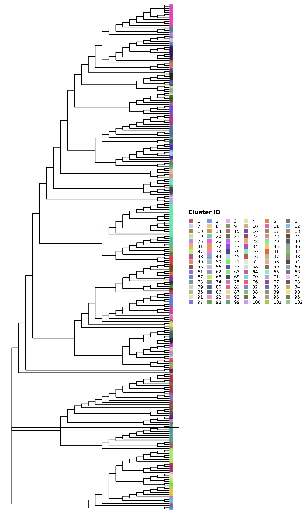
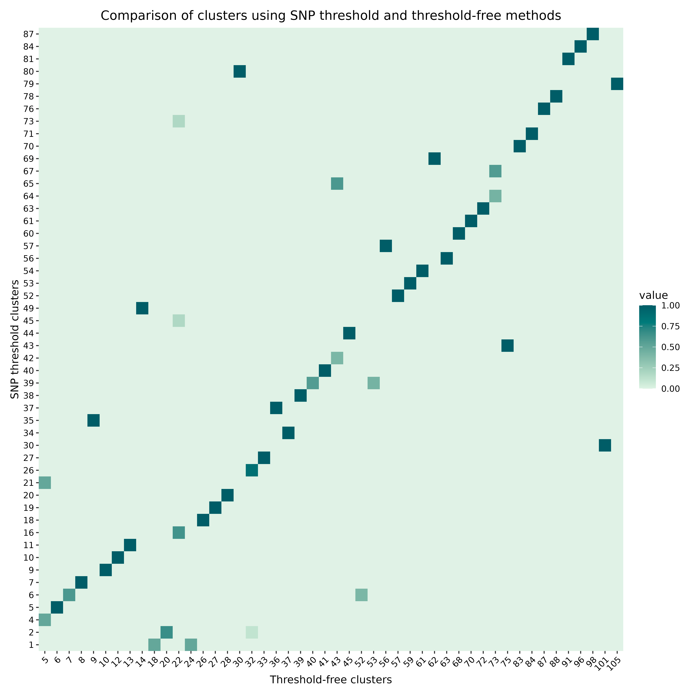
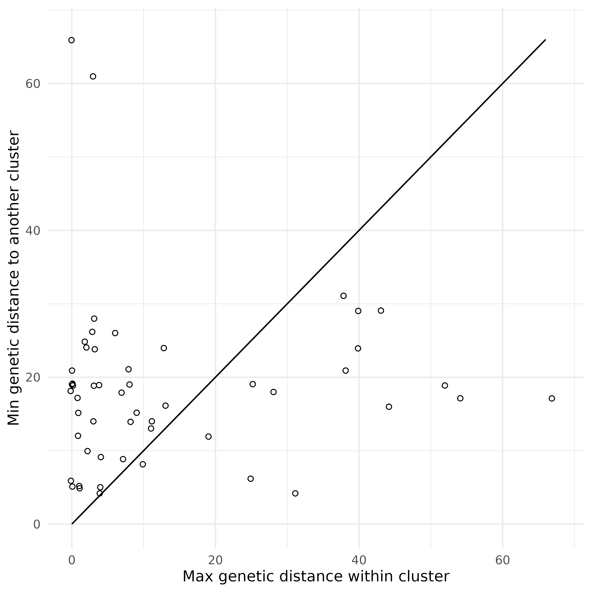
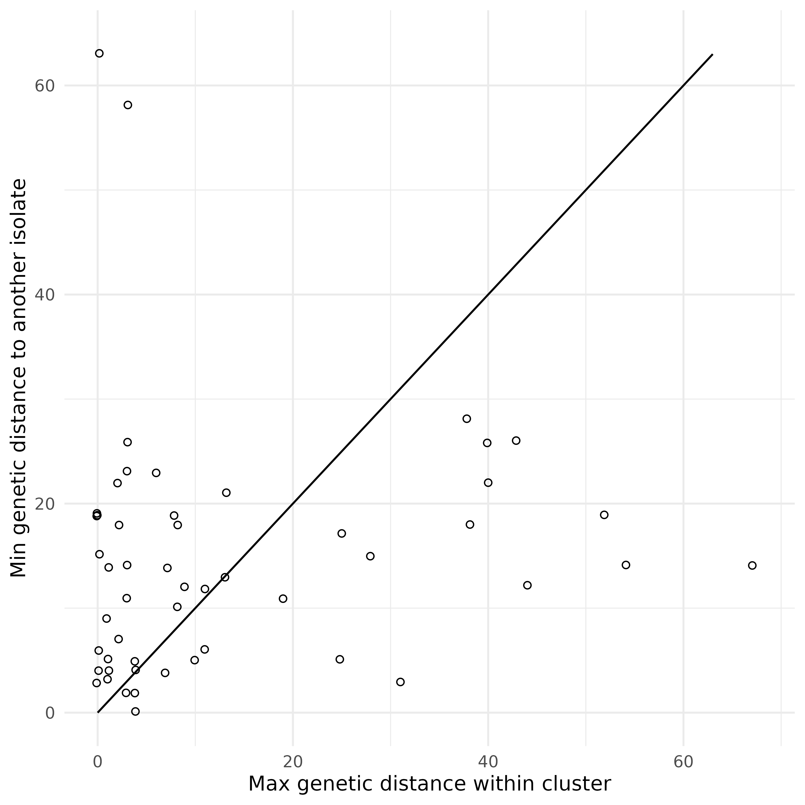

This vignette provides a brief introduction to the
hospitraceR package, which is designed for analysis of
transmission clusters using a combination of whole genome sequencing
(WGS) data and epidemiological information. The package includes
functions for clustering, visualization, and statistical analysis of
transmission clusters. To get started, we will first load the package.
Visualization functions are provided by the companion package hospitraceRVisualize.
We will also load the ape package, which is used for
phylogenetic analysis with the package and in the vignette, and
tidyr, ggplot2 and paletteer for
data manipulation and visualization.
library(hospitraceR)
library(hospitraceRVisualize)
library(ape)
library(tidyr)
library(ggplot2)
library(ggalign)
#> ========================================
#> ggalign version 1.2.0
#>
#> If you use it in published research, please cite:
#> Peng, Y.; Jiang, S.; Song, Y.; et al. ggalign: Bridging the Grammar of Graphics and Biological Multilayered Complexity. Advanced Science. 2025. doi:10.1002/advs.202507799
#> ========================================
library(paletteer)Loading and preparing data
The hospitraceR package comes with a sample dataset that
can be used for demonstration purposes. The dataset contains
epidemiological information for a set of isolates. To load the dataset,
we can use the following command:
load(system.file("extdata", "example.RData", package = "hospitraceR"))We first read in the sequence file which has been prepared using the
procedure described in Hawken et al.
(2022). We can read in the sequence file using ape’s
read.dna function:
dna_aln <- read.dna(system.file("extdata", "example.fasta", package = "hospitraceR"), format = "fasta")Now that the sequence file is loaded, we can extract the variable
positions in the alignment. The var_pos variable contains a
logical vector indicating which columns in the alignment are variable.
The dna_pt_labels variable contains the labels for the
sequences in the alignment, and facility_trace is a matrix
containing the trace data for the isolates. The valid set of labels is
determined by checking which labels in the dna_pt_labels
variable are present in the facility_trace matrix.
# Get all variable positions in the alignment
var_pos <- apply(dna_aln, 2, function(x) sum(x == x[1]) < nrow(dna_aln))
# Only keep those labels that are in the trace matrix
valid_labels <- dna_pt_labels[labels(dna_aln)] %in% row.names(facility_trace)We can then subset the alignment to include only the variable positions from the isolates with valid labels:
dna_var <- dna_aln[valid_labels, var_pos]We then use the helper function get_snp_dist_matrix() to
calculate the SNP distance matrix for these isolates:
snp_dist <- get_snp_dist_matrix(dna_var)The snp_dist variable contains the SNP distance matrix,
which is a square matrix where each entry represents the number of SNP
differences between two isolates. The diagonal entries are all zero, as
they represent the distance between an isolate and itself.
Clustering isolates using a hard SNP threshold
Now that we’ve loaded our data, we can start clustering the isolates. First, we want to use a hard SNP threshold to cluster the isolates.
The get_tn_clusters_snp_thresh() function takes the SNP
distance matrix and a threshold value as input and returns a list of
clusters. We use a threshold of 10 SNPs for this example:
clusters_snp <- get_tn_clusters_snp_thresh(snp_dist, 10)We can then visualize the clusters on a phylogenetic tree using the
plot_clusters_phylo() function. But for this, we first need
to generate a phylogenetic tree. We can do this using the
get_phylo_tree() function. We use the maximum parsimony
method for this example:
# Generate a parsimony tree
phylo_tree <- get_phylo_tree(dna_var, snp_dist, "pars")
plot_clusters_phylo(phylo_tree, clusters_snp)
But this isn’t the only SNP threshold approach. This method tries to preserve clusters to be within the phylogenetic tree structure, but we can also cluster the isolates just based on the SNP distance matrix with no regard for the
Clustering isolates using a threshold-free approach
In addition to the hard SNP threshold approach, we can also use a
threshold-free approach to cluster the isolates. The package implements
the method described in Hawken et al.
(2022) in the get_tn_clusters_sv_index() function.
The method uses a threshold-free approach to identify clusters based on
the structure of the phylogenetic tree. We use the same parsimony tree
as before for this example. This function takes in a few more inputs
than the SNP threshold method:
clusters_sv <- get_tn_clusters_sv_index(
dna_var, snp_dist, adm_seqs, adm_pos_pt_seqs,
dna_pt_labels, dates, phylo_tree
)The clusters_sv object contains the clusters identified
using the threshold-free approach. The plot shows the phylogenetic tree
with the clusters highlighted.
plot_clusters_phylo(phylo_tree, clusters_sv)
Comparing clusters
These two trees look quite different. We can compare the clusters
generated using the two methods using the
hospitraceRVisualize::plot_jaccard_similarity_heatmap()
function. This function generates a heatmap showing the overlap between
the clusters by indicating the proportion of isolates in each cluster
that are also present in the clusters generated by the other method.
Before we can use this function, we need to remove any singleton
clusters, which are clusters that contain only one isolate – these are
not very useful for comparison:
# remove singleton clusters from both clustering methods
clusters_snp <- remove_singleton_clusters(clusters_snp)
clusters_sv <- remove_singleton_clusters(clusters_sv)
# compare the clusters
plot_jaccard_similarity_heatmap(clusters_snp, clusters_sv) +
# change the color palette
scale_fill_paletteer_c("grDevices::Mint", direction = -1) +
# add a title
ggtitle("Comparison of clusters using SNP threshold and threshold-free methods") +
# add x and y axis labels
xlab("Threshold-free clusters") +
ylab("SNP threshold clusters") +
# center the title and rotate x axis labels
theme(
plot.title = element_text(hjust = 0.5),
axis.text.x = element_text(angle = 45, hjust = 1)
)
#> → heatmap built with `geom_tile()`
For more information on comparing clusters, see the cluster
comparison vignette, vignette("cluster_comparison").
Genetic distance context of clusters
We can also examine how genetically cohesive each cluster is relative
to the rest of the population. The hospitraceRVisualize
package provides two complementary scatter plots, built on the
per-cluster distance helpers in hospitraceR
(cluster_pairwise_distances() and
cluster_inter_distances()). Both take a vector of cluster
assignments and the SNP distance matrix directly, so we can reuse the
threshold-free clusters and snp_dist from above.
The first compares, for each cluster, the maximum genetic distance
within the cluster against the minimum genetic distance to an
isolate in another cluster. Points below the y = x
reference line are clusters whose internal diversity exceeds their
separation from the nearest other cluster:
plot_intra_vs_inter_cluster_distance(clusters_sv, snp_dist)
The second is similar, but compares the within-cluster diameter against the minimum distance to any other isolate, including isolates that were not assigned to a cluster:
plot_intra_vs_inter_isolate_distance(clusters_sv, snp_dist)